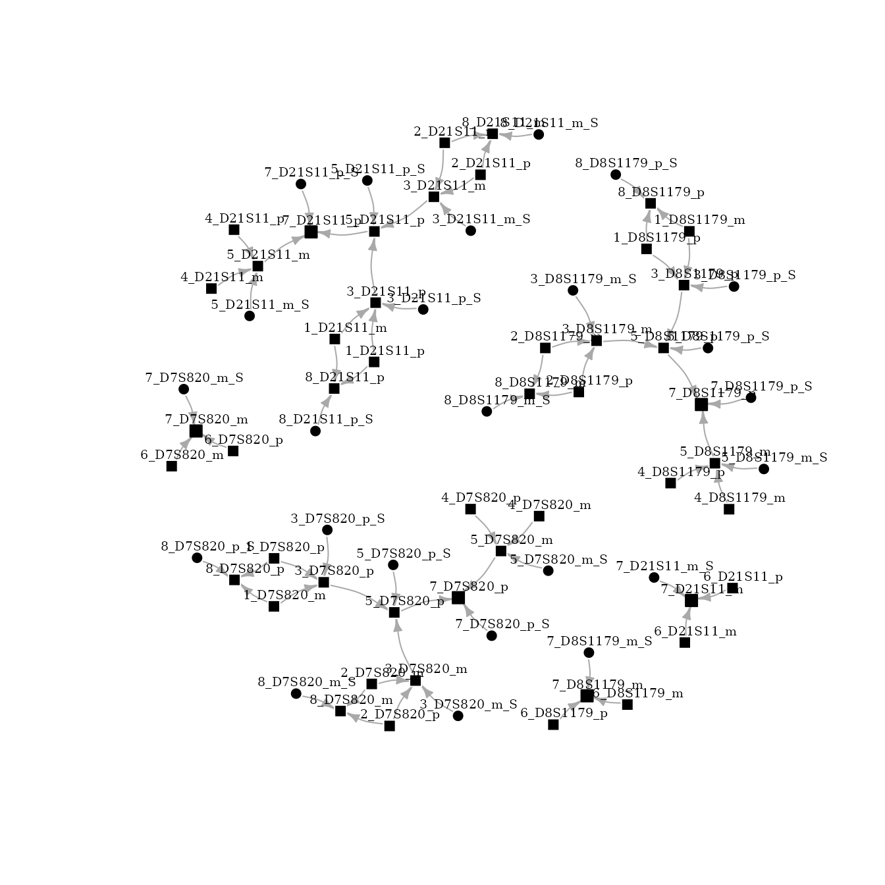

Installation
At first, fbnet library should be loaded. You can install fbnet and other useful packages with the following lines:
install.packages("fbnet")
install.packages("pedtools")
install.packages("mispitools")
install.packages("forrel")
library(fbnet)
library(pedtools)
library(mispitools)
library(forrel)Setting up the pedigree
In this example, we use pedtools library for pedigree definition. Also, forrel R library provides the framework for genotype simulations, and mispitools library allows working with different reference allele frequencies databases.
Freqs <- lapply(getfreqs(Argentina), function(x) {x[x!=0]})
ped = linearPed(3)
ped = addChildren(ped, father = 1, mother = 2)
ped = pedtools::setMarkers(ped, locusAttributes = Freqs[1:3])
plot(ped, hatched = 8)
ped = profileSim(ped, N = 1, ids = 8, numCores = 10)[[1]]
#> Preparing parallelisation using 10 coresSo, the pedigree has the genetic information from the paternal grand uncle.
From pedtools to fbnet ped format
ConvertPedFormat function, from fbnet, allows working with pedtools pedigree format.
ped_fbnet <- convertPedformat(ped)Network visualization with igraph
For visualizing the network igraph package should be installed and loaded.
install.packages("igraph")
library(igraph)
plot(bnet[["DAG"]], layout=layout_with_fr, vertex.size=4,
vertex.label.dist=0.7, vertex.label.color = "black", vertex.label.size = 20, vertex.color="black", edge.arrow.size=0.5)
As previously explained, nodes represent alleles and edges conditional relationships. The node name represents: ID_marker_allele. Id is the individual number, marker is the name of the genetic marker, allele could be paternal (p) or maternal (m). Due to the complexity of the network, an iterative visualization could be a better option.
Network visualization with networkD3
First, for iterative network visualization networkD3 must be installed as follows:
install.packages("networkD3")
library(networkD3)Iterative network could be visualized as follows:
simpleNetwork(as_long_data_frame(bnet[["DAG"]]), Source = 5, Target = 17, nodeColour = "black")